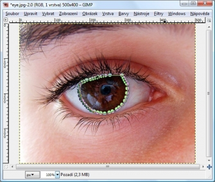

Web je již jen v režimu pro čtení a není možné přidávat nové komentáře nebo dotazy do fóra. Díky za přízeň.
Main menu
You are here
Změna barvy očí
27. August 2009 - 13:16 — Lukáš
- Otevřeme fotografii, kde chceme změnit barvu
- Vybereme nástroj „Cesty“ a ohraničíme pomocí něj oko
 - Klepneme na „Výběr z cesty“
- Vytvoříme novou vrstvu a nastavíme jí režim„Barva“
- Zvolíme vhodnou barvu a vyplníme s ní oko
- Hotovo :-)
{kind=link}
{kind=link}
Obrázek: http://www.flickr.com/
Kategorie:
Web je již ukončen. Nebude zde přibývat žádný nový obsah. Případné dotazy prosím na l.bacovsky(a)outlook.cz
Comments
jak mám vytvořit novou vrstvu
vytvořit vrstvu
Re: vytvořit vrstvu
mam jakoby nastavenou tu
V tomto návodu se vrstvě
tohle doopravdy
diky
Vůbec na to nemůžu
i přesto díky.je to moc
Nevím jak mám to oko vyplnit.
Nástrojem Plechovka
díky a jaký je název té
Jestli myslíš kód té barvy
Re: Změna barvy očí
Ahoj...
Re: Ahoj...
Re: barvy očí
Re: Změna barvy očí
Re: Změna barvy očí
Re: Změna barvy očí
Re: Změna barvy očí
Re: Změna barvy očí
Re: Změna barvy očí
Re: Změna barvy očí
Re: Změna barvy očí
Re: Změna barvy očí
Re: Změna barvy očí
Add new comment